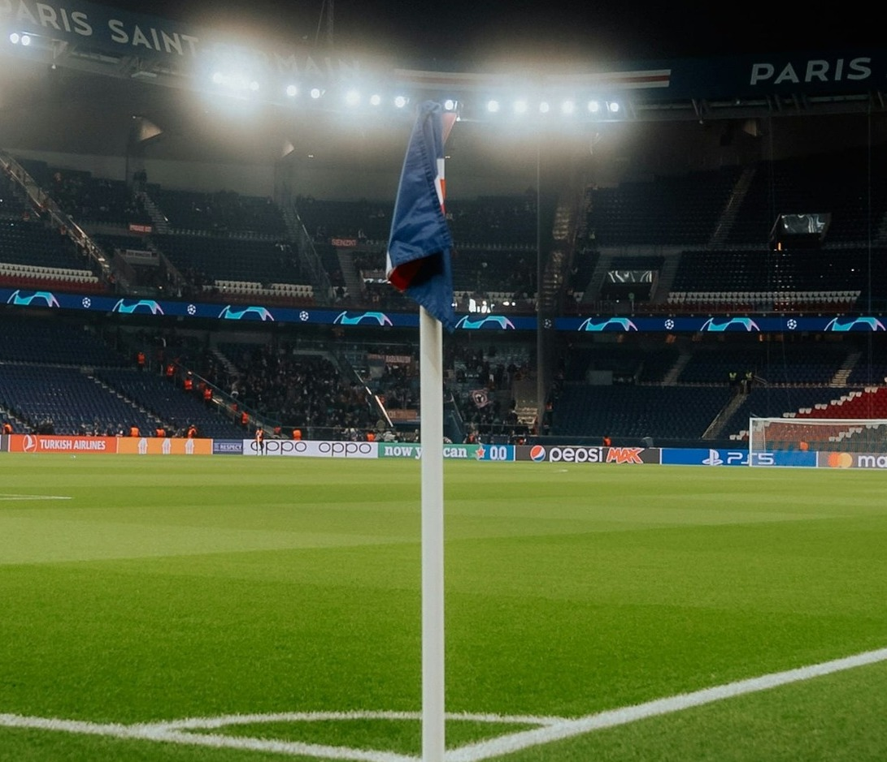

Voltar
Trabalhando com imagens
Formatos mais comuns
- JPEG/JPG: muito usado para fotos em geral
- PNG: imagens com exigencia maior de qualidade, permite uso de transparencia. Pode ser mais pesado.
- GIF: usado para desenhos/ilustrações, com poucas cores (até 256 cores). Suporte básico á transparencia e permite animações.
- WEBP: Formato moderno, com ótima compressão, suporta transparencia e animação.
- SVG: formato de imagem vetorial, muito usado em desenhos, logotipos. Formato que pode ser exportado a partir de programas como CorelDRAW/Ilustrator.
Aplicando imagem direto no body:

Imagens dentro de outros elementos


Imagem/Ilustração COM legenda
 Férias no Stonehenge em 2024
Férias no Stonehenge em 2024
Formato WEBP


Vetor para a web (SVG)

Tentando eu mesmo

Estádio do Paris Saint-Germain horas antes de receber um confronto pela Uefa Champions League.